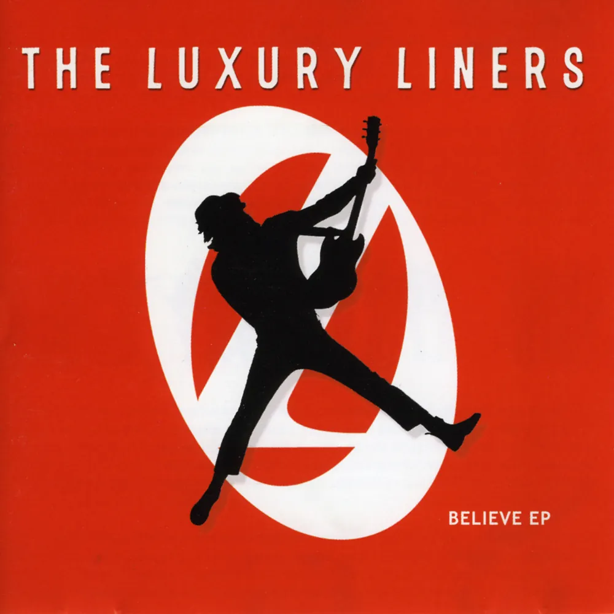
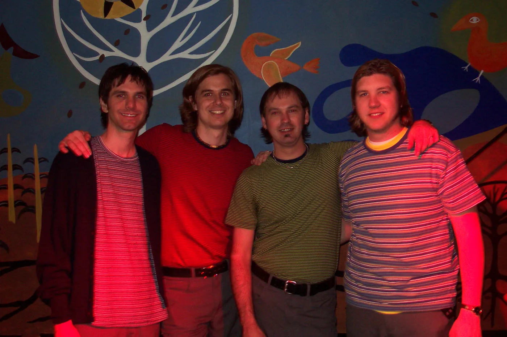

Chapter 4 · 2001
Believe, SXSW and Chad’s last show
An EP, a showcase in Austin, and the band carries on as a trio.

The Believe EP came out in March 2001 on Echomusic: “It’s You”, “Shake It Up” and a cover of Cher’s “Believe”. Mark Montgomery produced it with the band, Shane D. Wilson mixed it and Chris Milfred mastered it. It was an enhanced CD, with a video for “It’s You” on the disc. “Shake It Up” is a Luxury Liners original, and this was its first release.
At SXSW 2001 the band played the SESAC Showcase, and “Shake It Up” went out on the CD that SESAC handed out there.

Chad played his last show with the band in March 2001 (the band wore matching gray slacks from Castner-Knott) and left Nashville that month. David carried the band on as a trio with Scott and Larry. By August the band’s journal was talking about “the new three piece configuration”.